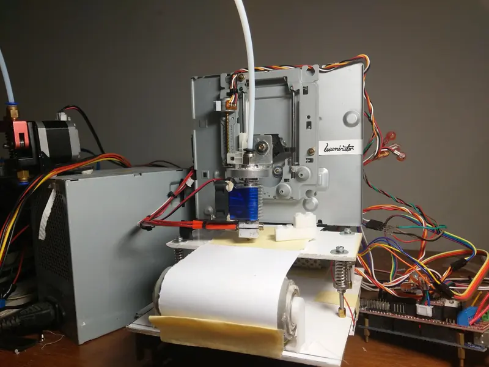

Ken Hung
Embedded firmware, tooling, and machines that had to be built cheap.
I work across the line between hardware and software. In 2018 I turned a pile of scrapped optical drives into a working 3D printer, because a real one cost more than I had. Most of what I have built since started the same way — wanting a specific thing to exist, then finding the cheapest honest route to it.
These days that means ESP32 firmware, C++ tooling, and web applications, with a workshop still attached. Based in Taiwan.
Selected work
Seven projects across eight years, newest first. Two repositories are private — those pages carry the write-up instead of a link.

Clauge
An ambient LED gauge that fills as your Claude usage limit fills, so you see the wall coming before you hit it mid-task. The ESP32 fetches usage itself every five minutes — unplug the computer and it keeps updating.
Project Handler
A work-order system for Taiwanese car repair shops, designed tablet-first for people standing next to a car with dirty hands. Domain model and API contract done; UI in progress.
KKCOM
A serial terminal built for hardware bring-up: saveable command tabs so you stop retyping the same probe commands, and a single-file release build with every asset embedded.

SYM Wolf 125
A Taiwanese commuter single rebuilt into a cafe racer over a year, including stripping and spraying the bodywork by hand. Mechanical work has no undo.

Rexxar
A 3D printer built from the CR-10 CAD rather than a kit — extrusion cut to length by hand, every part sourced individually, Klipper firmware and a Voron toolhead. Under NT$7,000.

AIRTICK
A digital clock with no circuit board and no insulated wire. Every connection is bare copper soldered in mid-air, so the wiring is simultaneously the circuit, the chassis and the lettering.

Project Illuminator
A working FDM 3D printer built from scrapped optical drives for under NT$2,000, then given a paper-belt conveyor so finished parts eject themselves and the next job starts unattended.
Timeline
Eight years, from a pen plotter made of e-waste to firmware that updates itself.
- 2026 Clauge — ESP32-C3 ambient usage gauge. 122 commits, April to July.
- 2025–2026 Project Handler — Repair-shop work-order system. Design and schema complete, build underway.
- 2024–2026 KKCOM — C++ serial terminal, rewritten from an earlier tool and still maintained.
- 2022–2023 SYM Wolf 125 — A year-long cafe racer rebuild, bodywork sprayed by hand.
- 2022 Rexxar — Second self-built 3D printer — this time from CAD and a parts list.
- 2019 AIRTICK — PCB-less freeform clock. National High School Creative Invention Competition.
- 2018–2019 Project Illuminator + MANUStar — 3D printer from scrapped optical drives, then an auto-ejecting conveyor. Entered in the national high school project competition two years running.
- 2018 The pen plotter — Where it all started: two optical-drive stepper sleds and a pen.
Skills
Embedded
- ESP32-C3 / ESP-IDF
- 8051 / AT89S51
- Arduino / AVR
- WS2812B
- OTA update & rollback
- UART / serial protocols
- Stepper motion
Languages
- C
- C++17
- TypeScript
- Python
- BASCOM BASIC
- G-code
Web
- SvelteKit
- Tailwind
- Express
- Prisma
- PostgreSQL
- Zod
- PWA / offline-first
Desktop & tooling
- Dear ImGui
- Win32
- CMake
- Git
- pnpm workspaces
- Docker
Fabrication
- FDM 3D printing
- Klipper
- CAD
- Aluminium extrusion
- Freeform circuits
- Spray finishing
About
I am Ken Hung, an engineer in Taiwan who is happiest when a project has both a compiler and a soldering iron in it.
I started in the electronics department of a vocational high school, where the cheapest way to own a 3D printer was to build one out of the optical drives the school was throwing away. That machine took ten months and cost under NT$2,000, and it taught me the thing I still work from: the expensive part of most products is the packaging, not the capability.
The projects since have been a slow widening of that — from 8051 assembly-adjacent BASIC to ESP32 firmware with staged OTA rollout, from a printer made of e-waste to one built from CAD, from single binaries to full-stack applications. I care about things that keep working when you are not watching them.